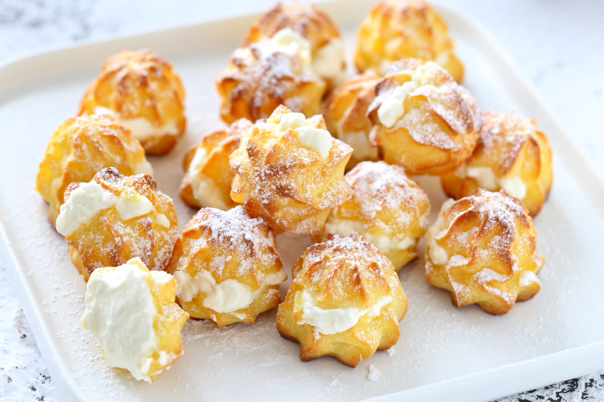
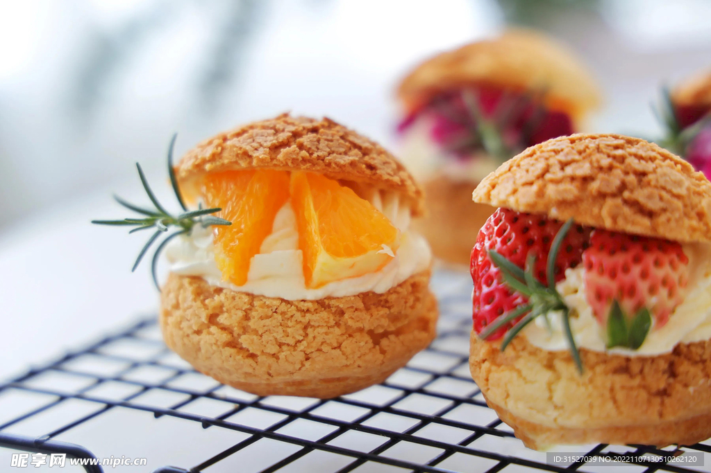
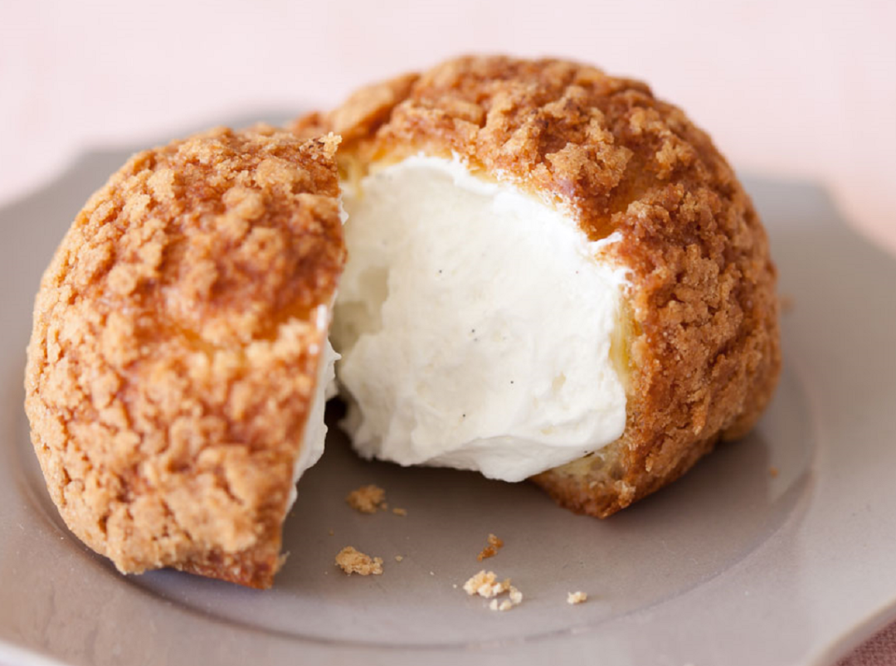

泡芙



泡芙（puff），中文又名奶油空心饼、气鼓、哈斗，属西式甜点，源自意大利后在法国发展为经典糕点。 其外皮以牛奶、黄油、低筋面粉、鸡蛋、白糖为原料经高温烘烤形成酥脆空心结构，面团不依赖泡打粉或酵母，通过蒸汽膨胀形成中空特性。内馅可灌注奶油、冰淇淋及各类奶酱，常见种类包含奶油泡芙、闪电泡芙等五大类别。该甜点自16世纪引入法国后，在1540年由凯瑟琳·德·美第奇宫廷厨师Pantanelli创制雏形，18世纪经Avice改良定型为Pâte à Choux形态。传统泡芙塔（Croquembouche）在庆典中被用作吉庆象征，因含黄油及高热量需控制食用量，每100克约含3汤匙油脂热量。